확대의 크기와
확대의 범위를 함께 읽다
2026년 상반기에는 벤처투자 금액과 투자기업 수가 함께 늘었다. 그러나 총액의 증가는 모든 업종과 지역의 여건이 같은 정도로 개선되었다는 뜻은 아니다. 이 보고서는 중소벤처기업부의 공개 집계를 재계산하여 업종별 기여, 기업 수와 평균액, 지역별 구성을 나누어 살펴본다.[1]
첫째, 투자 증가액 가운데 ICT제조, ICT서비스, 전기·기계·장비, 바이오·의료 네 업종이 차지하는 몫은 84.7%다. 이 값은 당해 투자액의 비중이 아니라 전년 대비 늘어난 금액의 구성이다. 둘째, 전체 투자기업 수의 증가율은 17.0%, 기업당 평균 투자액 증가율은 31.8%로 계산된다. 평균 투자액의 상승과 투자기업 수의 증가가 동시에 나타났다.[1]
셋째, 지역 통계에서는 비수도권 비중이 4.9%포인트 높아졌다. 다만 이 통계는 벤처투자회사·조합만을 대상으로 한다. 신기술금융사·조합까지 포함한 전체 투자액을 분모로 삼으면 서로 다른 모집단을 섞게 된다.[1]
이 세 관찰은 총액 확대를 부정하지 않는다. 확대가 일어난 위치와 비교의 경계를 더 정확하게 보여준다. 공개 집계의 재계산으로 확인할 수 있는 것은 금액·기업 수·구성의 변화이며, 개별 기업의 투자 접근성이나 미래 수익률, 특정 정책의 인과효과는 별도 자료가 필요한 질문이다.
도표와 편집 페이지 펼치기
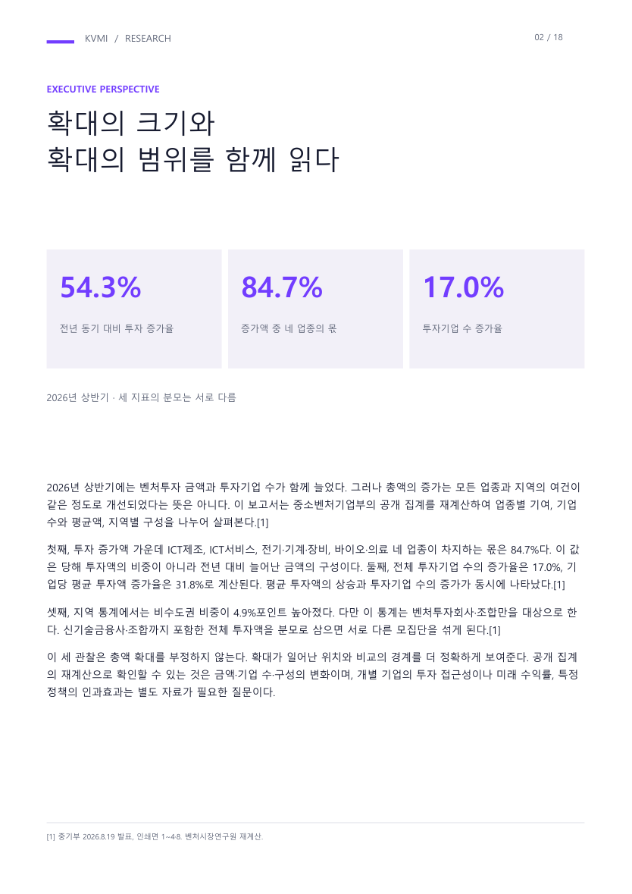
[1] 중기부 2026.8.19 발표, 인쇄면 1~4·8. 벤처시장연구원 재계산.
같은 숫자처럼 보여도
같은 시장은 아니다
투자 동향을 읽기 전에 기간과 집계 대상을 고정해야 한다. 이 보고서의 중심은 각 연도 상반기의 비교다. 연간 실적은 별도 맥락으로 제시하며 반기 수치를 연간 수치와 하나의 연속 계열로 연결하지 않는다. 반기 금액을 단순히 두 배 하여 연말 전망으로 제시하지도 않는다.
전체 투자·펀드결성 및 업종·업력 통계는 벤처투자회사·조합과 신기술금융사·조합을 합산한 발표 계열이다. 반면 지역 표는 벤처투자회사·조합 기준이다. 따라서 지역 표의 합계는 전체 투자액과 다르다. 지역 안에서 비수도권의 몫을 구할 때는 지역 표의 합계를 사용한다.[1]
발표 차수도 비교의 일부다. 2025년 연간 동향에 실린 그해 상반기 투자액은 57,380억원이지만, 2026년 상반기 발표본의 전년 비교값은 57,476억원이다. 본문 반기 분석에는 후자를 일관되게 썼다. 서로 다른 발표본에서 편리한 수치만 골라 붙이면 증가율이 달라진다.[1][2]
자료가 말하는 범위를 넓히지 않는 것이 분석의 출발점이다. 업종 분류를 AI 기업 분류로 바꾸거나, 기업당 평균 투자액을 개별 거래의 평균 규모로 바꾸지 않는다. 본문 도표의 단위·기간·집계 대상은 이 구분을 반복해서 확인할 수 있도록 함께 표시했다.
도표와 편집 페이지 펼치기
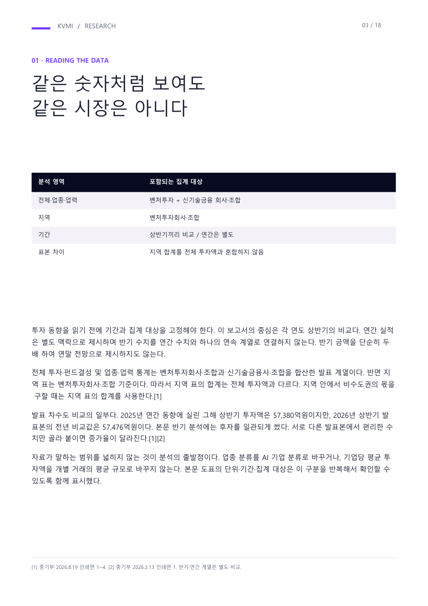
[1] 중기부 2026.8.19 인쇄면 1~4. [2] 중기부 2026.2.13 인쇄면 1. 반기·연간 계열은 별도 비교.
상반기 투자 확대는
어느 기준에서 두드러지는가
2026년 상반기 신규 투자액은 전년 같은 기간보다 31,200억원 늘었다. 발표된 원값으로 계산한 증가율은 54.3%다. 비교기간이 같은 반기이므로 이 수치는 계절이 다른 기간을 비교한 결과가 아니다. 다만 같은 반기 비교도 통계적 계절조정이나 경기순환의 인과 분석을 뜻하지는 않는다.[1]
비교의 시작점을 바꾸면 증가의 의미도 달라진다. 2022년 상반기와 비교한 명목 증가율은 16.0%다. 최근 한 해의 강한 반등과 앞선 높은 수준을 얼마나 넘어섰는지는 별개의 질문이다. 도표는 이 차이를 보이기 위해 전년 두 점만이 아니라 같은 발표본의 반기 계열을 함께 놓았다.[1]
이 차이는 '기저효과이므로 의미가 없다'거나 '기록을 경신했으므로 회복이 끝났다'는 양쪽 단정을 모두 경계하게 한다. 전년 대비 변화는 최근 속도를, 앞선 높은 시점과의 비교는 도달한 수준을 보여준다. 어느 한 지표가 다른 지표를 대신하지 않는다.
다음으로 확인할 것은 총액의 증가가 어디에서 발생했는가다. 같은 성장률이라도 여러 업종에 고르게 분산된 경우와 일부 업종의 큰 증가가 전체를 끌어올린 경우는 투자 주체가 해석해야 할 내용이 다르다.
도표와 편집 페이지 펼치기
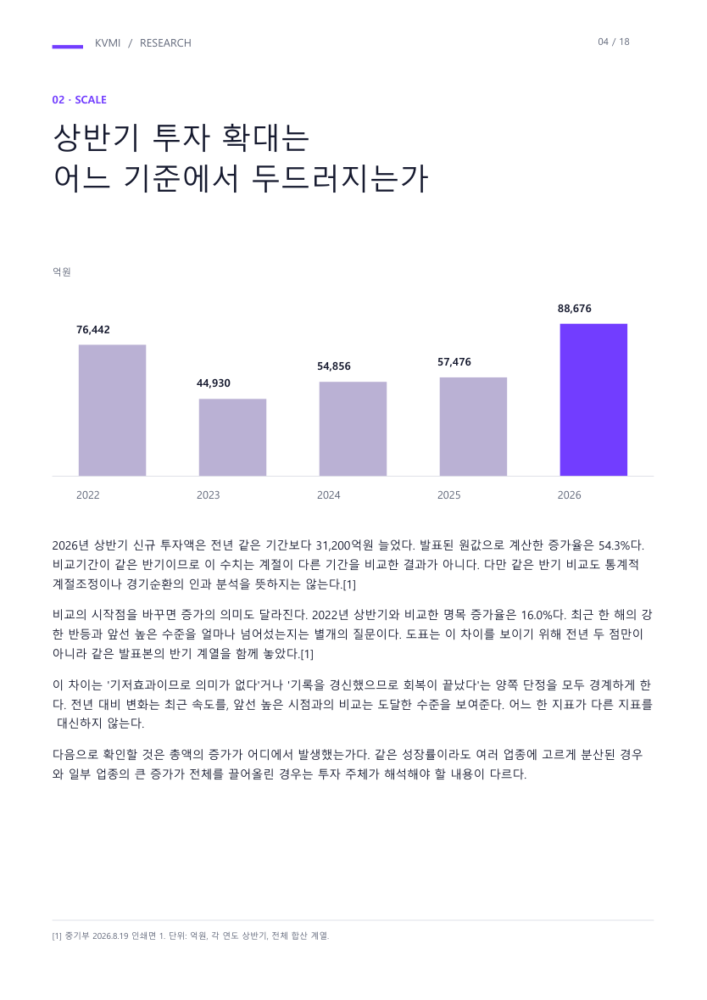
[1] 중기부 2026.8.19 인쇄면 1. 단위: 억원, 각 연도 상반기, 전체 합산 계열.
증가액이 어디에
모였는지를 읽다
증가 기여도는 각 업종의 금액 증가분을 전년 전체 투자액으로 나눈 값이다. 업종 자체의 성장률과 달리 전체 증가율에 얼마나 더했는지를 퍼센트포인트로 나타낸다. 규모가 작은 업종은 높은 성장률을 보이더라도 전체 증가액에 대한 기여는 작을 수 있다.
전기·기계·장비는 전체 증가율에 12.7%포인트, ICT서비스는 12.4%포인트, ICT제조는 11.7%포인트, 바이오·의료는 9.1%포인트 기여했다. 네 업종을 합치면 증가액의 84.7%에 해당한다. 한편 게임 부문의 감소는 증가 기여도에서 약 -2.4%포인트(-1,364억원)로 표시된다.[1]
이 결과를 곧바로 특정 기술에 대한 투자 비중으로 해석할 수는 없다. ICT서비스와 ICT제조에는 다양한 사업이 포함되며, 업종별 합계만으로 기업별 기술이나 투자 목적을 식별할 수 없기 때문이다. 이 보고서가 확인하는 것은 공식 업종 분류별 금액 변화다.
기여도 분석의 효용은 어느 부문을 더 살펴볼지 정하는 데 있다. 투자기업별 금액과 거래 자료가 추가되면 큰 거래 몇 건이 변화를 설명하는지 검토할 수 있지만, 현재 집계만으로 그 결론을 앞당기지는 않는다.
도표와 편집 페이지 펼치기
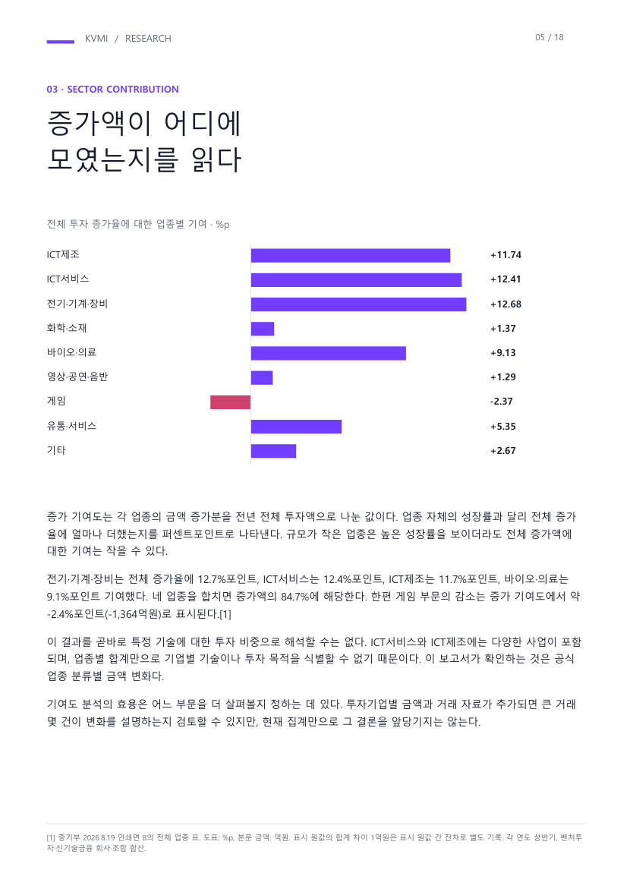
[1] 중기부 2026.8.19 인쇄면 8의 전체 업종 표. 도표: %p, 본문 금액: 억원. 표시 원값의 합계 차이 1억원은 표시 원값 간 잔차로 별도 기록. 각 연도 상반기, 벤처투자·신기술금융 회사·조합 합산.
투자가 늘어도
비중은 낮아질 수 있다
금액의 증가와 시장 안의 비중 상승은 같은 현상이 아니다. 어떤 업종의 투자액이 늘더라도 전체 투자액보다 느리게 늘면 비중은 낮아진다. 따라서 '성장했다'는 설명 뒤에는 절대액인지 상대적 몫인지를 밝혀야 한다.
ICT제조의 비중은 원값 기준 4.7%포인트, 전기·기계·장비는 3.3%포인트 높아졌다. 바이오·의료는 투자금액이 증가했지만 비중 변화는 -0.08%포인트로 작았다. 발표표에서 전년과 당해 비중이 같은 소수 첫째 자리로 보이더라도, 원값으로 계산한 미세한 차이는 남는다.[1]
화학·소재는 이 차이를 더 분명히 보여 준다. 투자액은 5,516억원에서 6,306억원으로 14.3% 증가했지만, 전체에서 차지하는 비중은 9.60%에서 7.11%로 낮아졌다. 금액의 증가와 상대적 비중의 하락은 함께 나타날 수 있다.[1]
이 장은 업종의 우열을 정하는 순위표가 아니다. 투자 포트폴리오가 어떤 시장 변화에 노출되어 있는지 비교하는 출발점이다. 자신의 포트폴리오와 시장을 대조할 때도 투자원가·공정가치·신규 투자액 중 같은 측정 기준을 선택해야 한다.
업종 비중은 개별 기업에 대한 집중도를 보여주지 않는다. 한 업종 안에 투자금이 고르게 분산되었는지, 소수 기업에 집중되었는지를 판단하려면 기업별 분포가 필요하다. 업종 구성이 변했다는 관찰과 시장의 경쟁·접근성이 변했다는 평가는 구분되어야 한다.
도표와 편집 페이지 펼치기
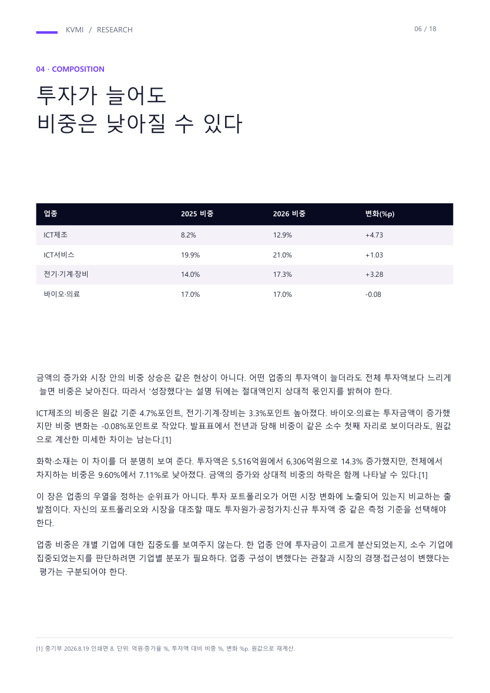
[1] 중기부 2026.8.19 인쇄면 8. 단위: 억원·증가율 %, 투자액 대비 비중 %, 변화 %p. 원값으로 재계산.
더 많은 기업과
더 큰 평균 투자액
전체 투자금액은 투자기업 수와 기업당 평균 투자금액의 곱으로 나눌 수 있다. 같은 집계의 총액과 전체 기업 수를 사용하면 이 관계는 회계적 항등식이다. 이 식은 증가의 구성을 보여주지만, 기업 수 증가가 평균액 상승을 일으켰다는 인과관계를 뜻하지 않는다.
2026년 상반기 전체 투자기업 수는 전년 동기 대비 17.0% 늘었고, 기업당 평균 투자액은 31.8% 증가했다. 평균액은 약 38.6억원이다. 두 증가율을 단순히 더한 값이 총액 증가율과 일치하지 않는 이유는 두 변화가 함께 발생한 교차항이 있기 때문이다.[1]
기업당 평균 투자액은 투자 건당 금액이나 평균 라운드 규모가 아니다. 같은 기업이 여러 건의 투자를 유치할 수 있고, 총액과 기업 수를 나눈 평균은 분포의 한가운데인 중앙값도 아니다. 일부 큰 투자가 평균을 끌어올렸는지는 개별 관측치가 있어야 판단할 수 있다.
그럼에도 전체 기업 수를 함께 보는 이유는 분명하다. 총액만 볼 때 사라지는 저변의 변화를 별도 축으로 드러낼 수 있기 때문이다. 이 보고서는 '모든 기업이 더 쉽게 투자받았다'는 주장 대신, 관찰된 기업 수 증가와 관찰되지 않은 분포를 구분한다.
기업 수는 발표된 집계값이며 고유 기업 수와 같다고 단정하지 않는다. 2024년 연간 동향 발표본은 투자 주체 간 중복을 포함한다고 밝혔으나, 이 반기 표에는 중복 제거 기준이 명시되어 있지 않다.[1][3]
도표와 편집 페이지 펼치기
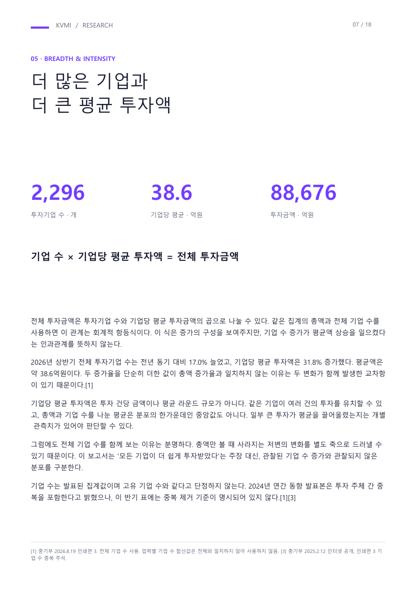
[1] 중기부 2026.8.19 인쇄면 3. 전체 기업 수 사용. 업력별 기업 수 합산값은 전체와 일치하지 않아 사용하지 않음. [3] 중기부 2025.2.12 인터넷 공개, 인쇄면 3 기업 수 중복 주석.
초기기업의 확대를
금액·기업 수·비중으로 나누다
초기기업 투자를 평가할 때는 업력 기준과 성장단계를 혼동하지 않아야 한다. 이 보고서에서 초기기업은 원자료의 '업력 3년 이하' 범주를 가리킨다. 시드·시리즈A 같은 투자 라운드 분류와 같은 뜻으로 사용하지 않는다.[1] 초기기업 투자액은 11,687억원에서 18,282억원으로 56.4% 늘었다.[1]
초기기업의 투자기업 수는 28.9%, 기업당 평균 투자액은 21.4% 증가했다. 금액 확대가 평균액 변화만으로 나타난 것은 아니며 투자기업 수 증가도 함께 관찰된다. 그러나 전체 투자액 대비 초기기업 비중의 변화는 약 0.28%포인트 상승이다. 큰 금액 증가와 작은 구성비 변화가 동시에 성립한다.[1]
이 차이는 정책 담당자의 질문을 구체화한다. 초기기업에 유입된 자금의 절대 규모가 관심이라면 금액을, 투자받은 기업의 저변이 관심이라면 기업 수를, 전체 시장 안에서의 상대적 배분이 관심이라면 비중을 보아야 한다. 하나의 지표만으로 서로 다른 목표를 모두 평가할 수는 없다.
업력별 기업 수를 단순 합산해 전체 기업 수를 다시 만들지 않았다. 원자료에서 두 업력 범주의 기업 수 합계와 발표된 전체 수가 일치하지 않으며, 그 차이의 원인을 이 자료만으로 확정할 수 없기 때문이다. 비교 가능한 각 범주의 전년·당해 수치를 사용하고, 전체는 별도로 발표된 합계를 유지했다.
도표와 편집 페이지 펼치기
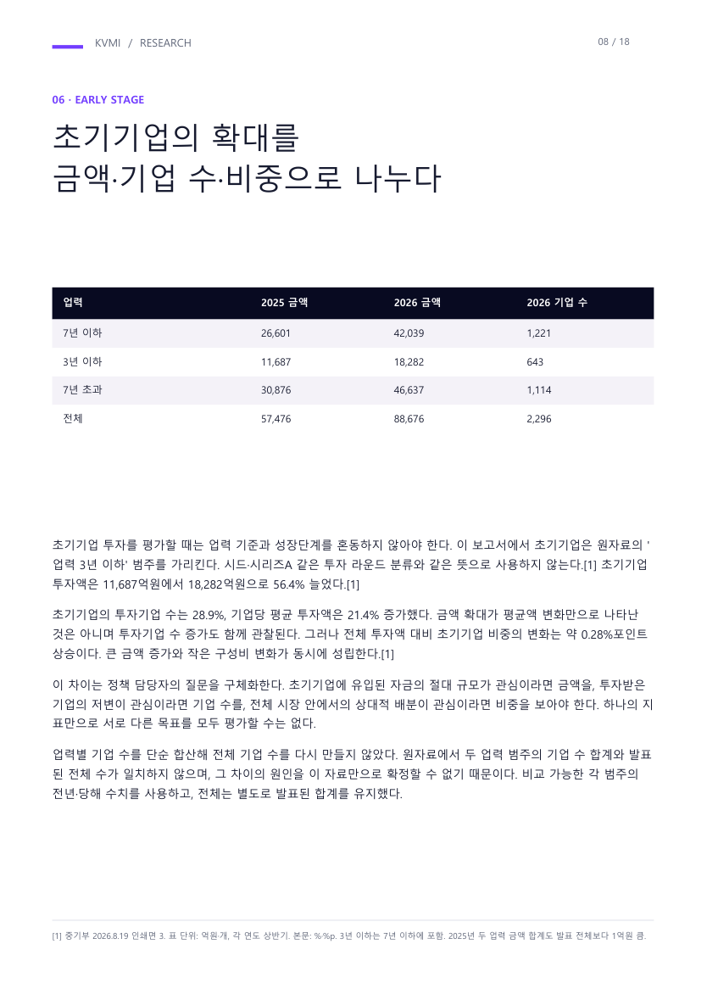
[1] 중기부 2026.8.19 인쇄면 3. 표 단위: 억원·개, 각 연도 상반기. 본문: %·%p. 3년 이하는 7년 이하에 포함. 2025년 두 업력 금액 합계도 발표 전체보다 1억원 큼.
비수도권의 비중 상승은
별도의 분모에서 확인된다
지역별 투자에서는 집계 대상의 구분이 특히 중요하다. 공식 지역 표는 벤처투자회사·조합 기준이며 신기술금융사·조합을 포함한 전체 계열과 다르다. 도표는 지역 표에 포함된 수도권·비수도권·해외를 같은 분모로 놓았다.[1]
이 범위에서 비수도권의 비중은 2025년 상반기 18.6%에서 2026년 상반기 23.5%로, 전년 동기보다 4.9%포인트 높아졌다. 해외 투자까지 포함한 지역 표의 전체를 분모로 한 값이다. 국내 지역만을 대상으로 계산하면 다른 비중이 나오므로 두 비율을 혼용해서는 안 된다.[1]
수도권과 비수도권의 투자액이 모두 증가하는 가운데 비수도권의 상대적 몫도 커졌다. 다만 비수도권을 하나의 균질한 시장으로 볼 수는 없다. 지역 전체의 성장률은 개별 시도의 변화와 큰 투자 거래의 영향을 함께 담고 있기 때문이다.
지역 투자 확대를 인구·기업 수 대비 접근성의 개선으로 평가하려면 각 지역의 비교 가능한 기업 모집단이 추가로 필요하다. 여기서는 투자금액의 위치를 설명하며, 지역별 투자 가능 기업 한 곳이 자금을 조달할 확률까지 계산하지 않는다.
도표와 편집 페이지 펼치기
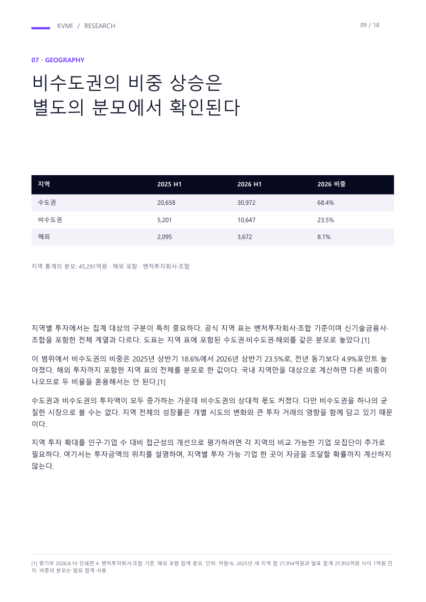
[1] 중기부 2026.8.19 인쇄면 4. 벤처투자회사·조합 기준. 해외 포함 합계 분모. 단위: 억원·%. 2025년 세 지역 합 27,954억원과 발표 합계 27,955억원 사이 1억원 잔차. 비중의 분모는 발표 합계 사용.
지역 전체의 성장 뒤에는
서로 다른 변화가 있다
비수도권이라는 합계 안에서도 증가의 위치를 한 단계 더 나누어야 한다. 대전의 투자 증가액을 비수도권 전체 증가액으로 나누면 47.4%다. 이 값은 당해 비수도권 투자액에서 대전이 차지하는 비중이 아니라, 전년 대비 늘어난 금액 중 대전의 몫이다.[1]
따라서 비수도권 합계의 큰 증가를 모든 지역의 동일한 개선으로 읽는 것은 적절하지 않다. 이 장의 도표는 대전과 나머지 비수도권의 증가액을 나누어 합계가 만들어지는 구조를 보여준다. 개별 시도의 변화는 같은 발표의 시도별 표를 대조해야 한다.[1]
지역별 성장률만을 순위로 나열하면 작은 전년 금액을 가진 지역이 상대적으로 크게 보일 수 있다. 지역별 후속 분석에서 증가율·증가액·비중을 함께 확인해야 하는 이유다. 투자금액의 규모와 변동률을 함께 읽어야 정책 목표에 맞는 후속 질문을 정할 수 있다.
후속 연구에서는 투자기업 수, 거래별 금액, 업종, 기업 소재지의 정의를 함께 확인할 필요가 있다. 해당 자료가 확보되면 '더 많은 기업에 투자되었는가'와 '같은 기업에 더 큰 자금이 투입되었는가'를 지역별로 분리할 수 있다. 현재 보고서는 확보되지 않은 기업별 분포를 추정해서 채우지 않는다.
도표와 편집 페이지 펼치기
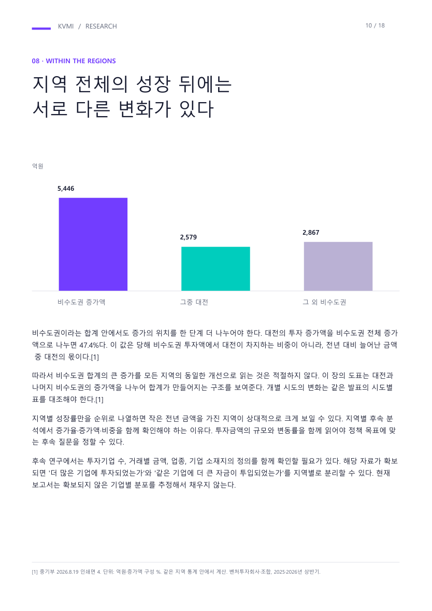
[1] 중기부 2026.8.19 인쇄면 4. 단위: 억원·증가액 구성 %. 같은 지역 통계 안에서 계산. 벤처투자회사·조합, 2025·2026년 상반기.
민간 출자액 증가와
민간 비중 하락은 양립한다
펀드결성의 출자자 구성을 읽을 때도 금액과 비중을 구분해야 한다. 민간 출자액의 증가 여부와 전체 출자에서 민간이 차지하는 몫의 변화는 서로 다른 질문이다. 한쪽이 늘었다고 다른 쪽도 반드시 늘어나는 것은 아니다.
2026년 상반기 민간부문 출자액은 전년 동기 대비 28.1% 증가했다. 같은 기간 정책금융 출자액은 58.3% 늘었다. 두 금액이 모두 늘었지만 증가 속도가 달라 민간 비중은 약 3.1%포인트 낮아졌다. 민간의 비중 하락만을 근거로 민간자금이 이탈했다고 말하면 절대액 증가를 놓치게 된다.[1]
금액과 비중의 변화만으로 공공·민간 자금의 역할 변화를 판단할 수는 없다. 비중은 상대적 구성이고 금액은 관찰된 규모이기 때문이다. 출자 주체의 역할을 평가하려면 정책 목적, 출자 조건, 위험 부담, 다른 민간자금의 유입 여부를 별도로 검토해야 한다.
이 보고서는 출자 구성의 변화를 확인하되 정책금융이 민간을 대체했는지 또는 유인했는지 인과효과를 추정하지 않는다. 이를 판단하려면 정책 개입이 없었을 경우의 비교 대상과 출자 조건을 포함한 분석 설계가 필요하다.
도표와 편집 페이지 펼치기
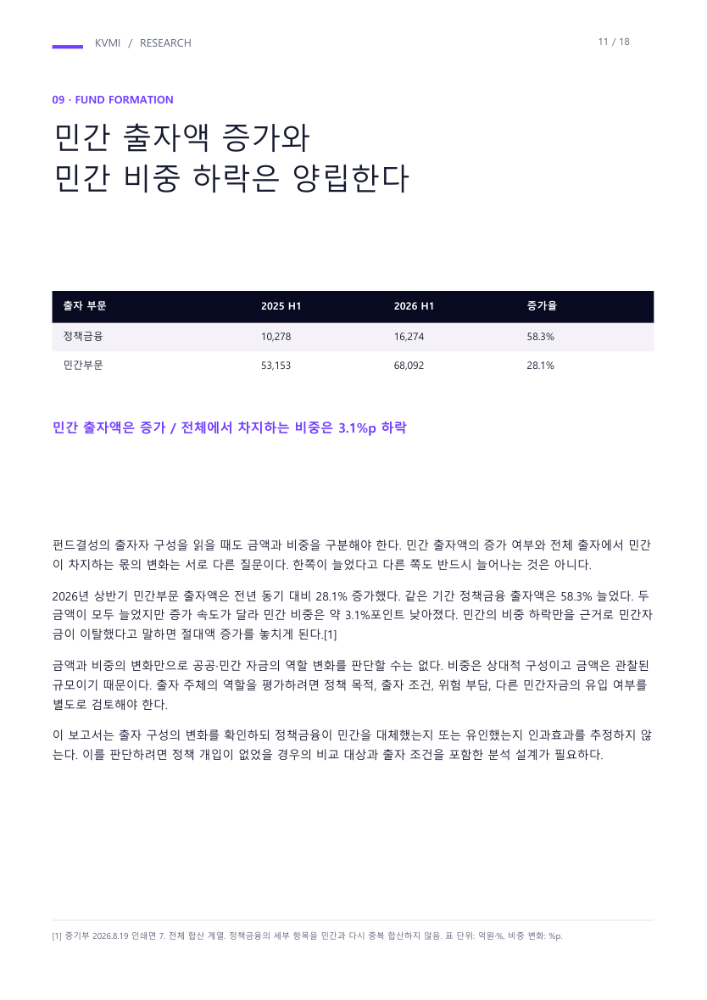
[1] 중기부 2026.8.19 인쇄면 7. 전체 합산 계열. 정책금융의 세부 항목을 민간과 다시 중복 합산하지 않음. 표 단위: 억원·%, 비중 변화: %p.
펀드 조성과 투자 집행은
서로 다른 시계를 가진다
신규 펀드결성액과 신규 투자액은 시장의 서로 다른 흐름이다. 같은 해 관찰된 값이라도 그해 결성된 펀드가 그해 투자액 전부를 집행했다고 볼 수 없다. 이전에 결성된 펀드의 투자가 포함될 수 있고, 투자 주체와 자금의 운용기간도 다르기 때문이다.
따라서 신규 투자액을 신규 펀드결성액으로 나눈 값을 '집행률'로, 둘의 차이를 '미집행 자금'으로 부르지 않는다. 해당 개념을 확인하려면 펀드별 약정·납입·투자·분배와 빈티지를 연결한 자료가 필요하다. 두 계열을 나란히 보여 주는 것은 대체로 같은 방향인지 다른 방향인지 관찰하기 위한 것이다.
연간 계열에서 2025년 투자액은 2021년과 비교해 14.5% 낮다. 반면 앞선 장의 2026년 반기 비교는 같은 반기 사이의 결과다. 서로 다른 기준점과 기간을 사용하면 시장에 대한 짧은 설명이 달라질 수 있으므로, 어느 기간의 어느 값을 말하는지를 먼저 밝혀야 한다.[2]
이 구분은 회수시장 분석에도 이어진다. 투자액과 결성액만으로 현금 회수나 투자자에게 실제 분배된 금액을 추론할 수는 없다. 회수의 원가·매각대금·분배금은 같은 지표가 아니며, 본 보고서는 자료가 확보되지 않은 회수 병목을 결론으로 제시하지 않는다.
도표와 편집 페이지 펼치기
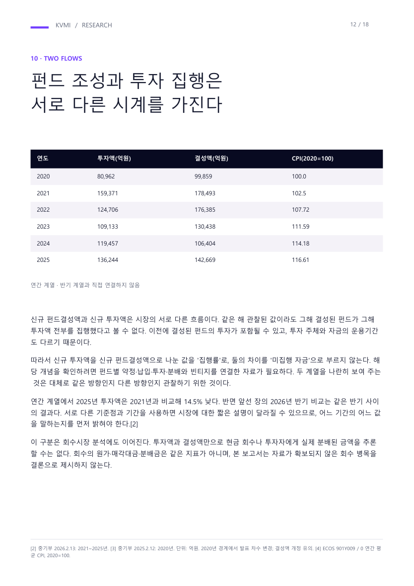
[2] 중기부 2026.2.13: 2021~2025년. [3] 중기부 2025.2.12: 2020년. 단위: 억원. 2020년 경계에서 발표 차수 변경; 결성액 개정 유의. [4] ECOS 901Y009 / 0 연간 평균 CPI, 2020=100.
가격 기준을 바꾸면
장기 비교의 폭도 달라진다
서로 다른 시점의 금액을 비교할 때는 명목 금액과 물가 기준을 구분할 필요가 있다. 이 장에서는 소비자물가지수로 투자액을 나누었을 때 비교 결과가 얼마나 달라지는지만 살펴본다. 이것은 벤처투자 전용 디플레이터를 적용한 공식 실질투자 통계가 아니다.
각 상반기 투자액을 해당 기간 월별 소비자물가지수의 단순평균으로 나누면, 2026년 상반기 투자액은 2025년 동기보다 약 50.5%, 2022년 동기보다 약 3.7% 높게 계산된다. 같은 비교의 명목값은 각각 54.3%, 16.0%다. 특히 앞선 높은 시점과 비교할 때 가격 기준의 선택이 증가 폭에 영향을 준다.[1][4]
소비자물가지수는 벤처기업의 인건비·설비비·연구개발비 구성이나 기업가치를 직접 반영하지 않는다. 따라서 환산 결과를 투자 생산성, 기업의 구매력, 주식 가치 또는 투자수익률로 해석하지 않는다.
이 보조 계산의 목적은 하나의 '정답 금액'을 추가하는 데 있지 않다. 명목 증가라는 설명에 어떤 가격 기준이 생략되어 있는지 드러내는 데 있다. 실제 자원 투입을 평가하려면 연구 목적에 맞는 비용 지수와 부문별 가격 자료를 추가로 검토해야 한다.
도표와 편집 페이지 펼치기
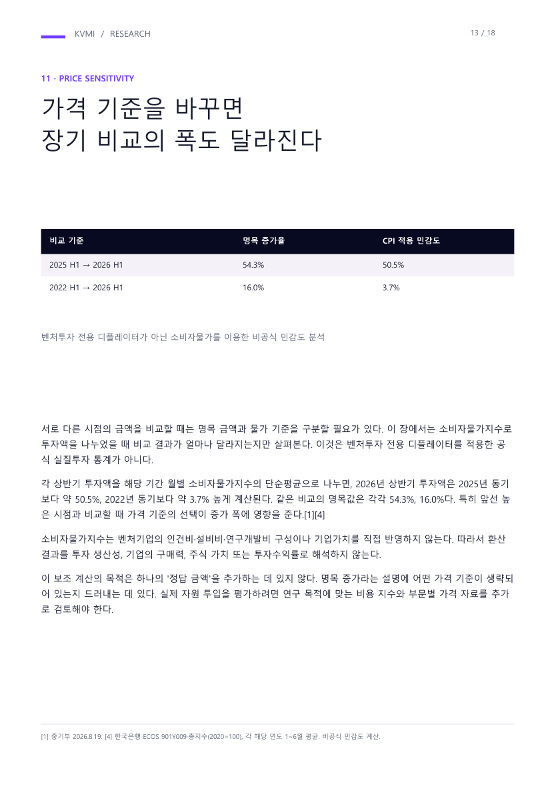
[1] 중기부 2026.8.19. [4] 한국은행 ECOS 901Y009·총지수(2020=100), 각 해당 연도 1~6월 평균. 비공식 민감도 계산.
의사결정자는
어떤 질문을 더해야 하는가
기관 출자자에게 첫 질문은 시장 전체가 커졌는지가 아니라 자신의 투자 대상과 같은 집계에서 무엇이 변했는가다. 업종·업력·지역의 구성 변화는 비교의 출발점이 될 수 있지만, 펀드의 수익성과 위험을 평가하려면 해당 펀드의 빈티지·투자원가·회수·분배 자료가 필요하다. 시장의 신규 투자액은 펀드 성과를 대신하지 않는다.
운용자에게는 규모와 분포를 함께 읽는 일이 중요하다. 기업당 평균액이 올랐다는 사실만으로 모든 거래의 요구 자금이 커졌다고 판단할 수 없다. 투자 대상의 기업별 자료를 통해 중앙값, 상위 거래의 비중, 후속 투자 여부를 점검해야 시장 평균과 자신의 관찰 사이의 차이를 해석할 수 있다.
정책 담당자에게는 목표와 지표의 정합성이 우선한다. 초기기업에 더 많은 금액을 공급하려는 목표, 더 많은 기업이 투자를 받도록 하려는 목표, 비수도권의 상대적 배분을 늘리려는 목표는 같은 측정값으로 평가되지 않는다. 금액·기업 수·비중 중 목표와 직접 연결되는 값을 정하고 나머지 지표로 보완해야 한다.
총액은 확대의 크기를, 업종·지역 구성은 확대가 일어난 위치를 보여준다. 공개 통계로 확인할 수 있는 범위를 지키면서 두 관찰을 함께 읽어야 한다. 그래야 시장의 확대를 낙관이나 비관의 근거로 단정하지 않고, 다음 의사결정에 필요한 질문을 구체화할 수 있다.
도표와 편집 페이지 펼치기
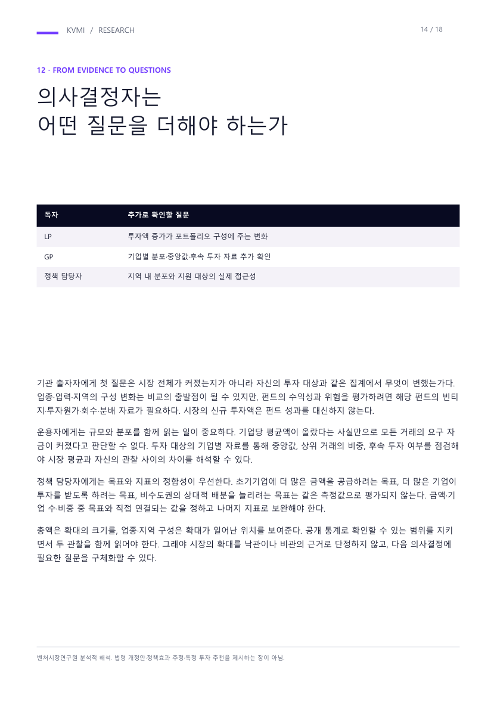
벤처시장연구원 분석적 해석. 법령 개정안·정책효과 추정·특정 투자 추천을 제시하는 장이 아님.
계산을 재현하는
기준과 산식
원자료는 억원 단위의 발표값을 사용한다. 본문의 금액·비율은 이 값에서 계산한 뒤 표시 단계에서 반올림한다. 표시된 구성비나 평균값을 다시 평균하거나 나누어 본문 수치를 만들지 않는다. 도표 레이블의 반올림 때문에 표시값의 합이 정확히 일치하지 않을 수 있다.
업종별 증가 기여도는 전년 전체 투자액을 공통 분모로 사용한다. 증가액의 구성비는 전체 증가액을 분모로 사용하므로 같은 숫자가 아니다. 세부 업종의 표시값으로 계산한 증가액 합계와 발표된 전체 증가액에는 1억원의 차이가 있으며, 이 잔차를 특정 업종에 임의로 배분하지 않는다.[1]
기업 수는 공식 표가 제시한 전체값과 각 업력 범주의 값을 각각 사용한다. 범주 간 수의 합이 전체와 다르다는 사실을 기록하며 중복 원인을 임의로 특정하지 않는다. '3년 이하'는 '7년 이하'의 하위 범주이므로 금액이나 수를 별도 독립 집단처럼 더하지 않는다.[1] 평균 투자액은 해당 범주의 금액을 같은 범주의 발표 기업 수로 나눈다. 전체 평균에는 발표된 전체 기업 수를 사용한다.
CPI 환산은 상반기 여섯 개 월별 지수의 산술평균을 사용한다. 연간 표의 CPI는 연간 평균 계열을 참고용으로 제시하며 본문의 가격 환산에는 사용하지 않았다. API 조회의 개수는 정확성이나 독립 출처 수를 뜻하지 않으며, 본문 결론은 각 원자료와 실제 산식 대조에 근거한다.[4]
도표와 편집 페이지 펼치기
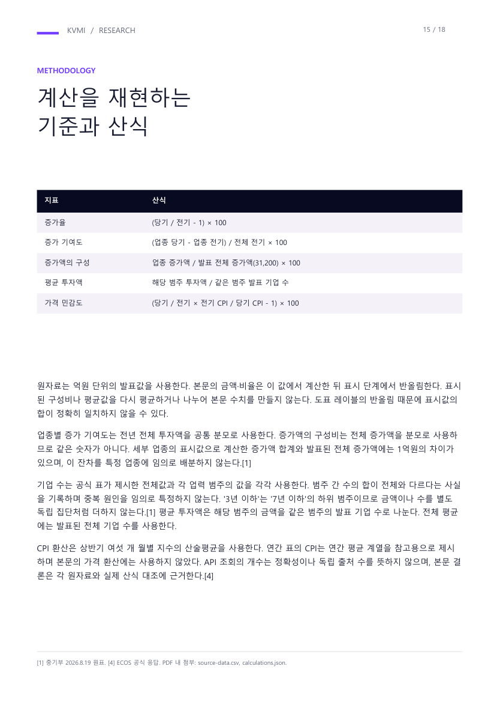
[1] 중기부 2026.8.19 원표. [4] ECOS 공식 응답. PDF 내 첨부: source-data.csv, calculations.json.
연간 원자료와 계산표
이 표는 연간 계열을 정리한다. 반기 투자·결성 계열은 PDF에 첨부된 source-data.csv의 h1_investment와 h1_funds 행에서 확인할 수 있다. 반기 시계열은 2026년 상반기 발표본에서 가져왔으며, 연간 시계열은 별도의 연간 발표본에서 가져왔다. 같은 연도의 연간·상반기 수치라도 발표 차수의 정정이 반영되는 시점이 다를 수 있으므로 두 계열로 하반기 금액을 역산하지 않는다.[1][2][3] 2020년은 [3], 2021~2025년은 [2]를 사용했다. 결성액은 발표 차수에 따라 개정되어, 예를 들면 2021년 178,481→178,493억원, 2024년 105,550→106,404억원으로 달라졌다. 해당 경계에서 이전 발표값을 소급 보정하지 않았다.
모든 표는 투자·결성 금액의 사실값과 출처를 명시해 재구성했다. 원 기관의 도표 디자인이나 보고서 문장을 재현하지 않았으며, 분석과 시각화는 이 보고서를 위해 새로 구성했다. 공개 자료의 이용과 연구원의 독자적 해석은 해당 기관의 후원·제휴를 뜻하지 않는다.
도표와 편집 페이지 펼치기
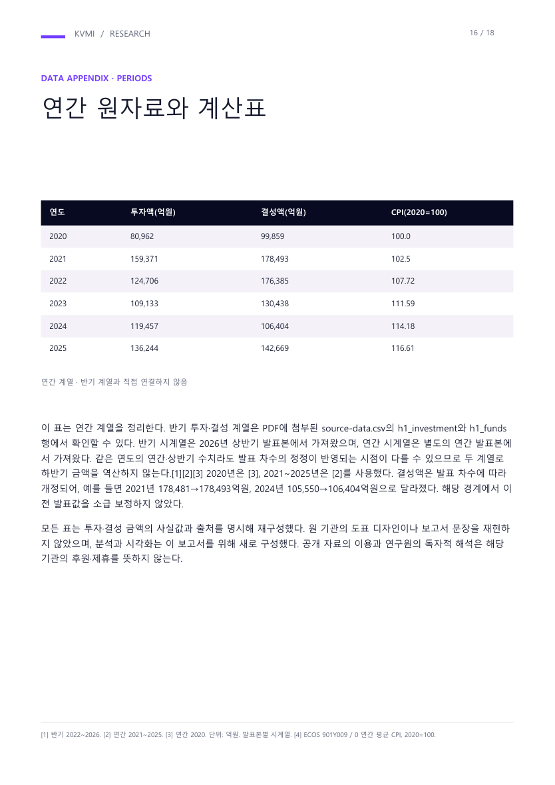
[1] 반기 2022~2026. [2] 연간 2021~2025. [3] 연간 2020. 단위: 억원. 발표본별 시계열. [4] ECOS 901Y009 / 0 연간 평균 CPI, 2020=100.
원자료와 계산표 ②
이 표의 증가 기여도는 각 업종 증가액을 2025년 상반기 전체 투자액으로 나눈 값이다. 따라서 한 업종의 투자금액 증가율과 다르며, 같은 분모를 사용한 기여도를 합하면 전체 증가율과 대조할 수 있다. 다만 표시 원값의 합계 잔차는 남는다.[1]
투자기업 수나 기업가치 자료가 없는 이 표만으로 특정 산업에 대한 기업별 집중도, 투자 접근성 또는 향후 수익률을 판단하지 않는다. 업종별 구성은 후속 분석의 대상과 질문을 정하기 위한 집계다.
도표와 편집 페이지 펼치기
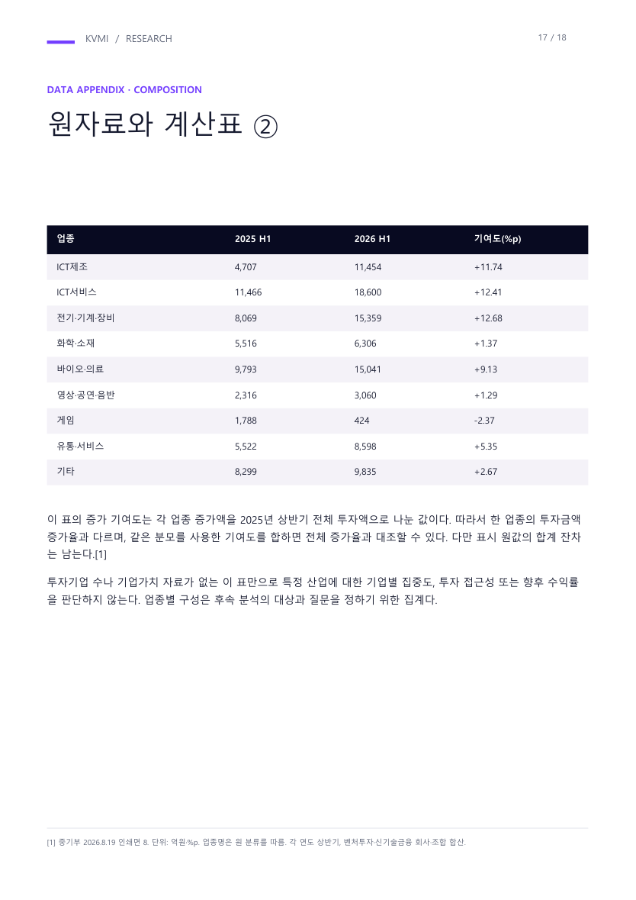
[1] 중기부 2026.8.19 인쇄면 8. 단위: 억원·%p. 업종명은 원 분류를 따름. 각 연도 상반기, 벤처투자·신기술금융 회사·조합 합산.
출처와 발간 정보
본 보고서는 중소벤처기업부의 공개 통계와 한국은행 ECOS의 소비자물가지수를 바탕으로 벤처시장연구원이 자체 분석을 위해 구성한 원고다. 타 연구기관 보고서의 본문·도표를 전재한 자료가 아니다. 출처 기관이 직접 관찰한 수치와 본 보고서에서 계산·해석한 내용을 구분한다.
중소벤처기업부 보도자료의 수치는 「저작권법」 제24조의2(공공저작물의 자유이용)에 따라 출처를 표시하고 인용·계산했다. 2026년 8월 19일 상반기 발표의 첨부 보도자료에는 공공누리 제1유형(출처표시)이 붙어 있다. 보도자료의 원표·도표는 전재하지 않았다. 원자료 CSV의 모든 행에 출처 열을 동봉한다.
핵심 분석기간은 2026년 상반기이며 주요 발표 기준은 2026년 8월 19일이다. 원고 작성일은 2026년 9월 22일이다. CPI는 2026년 9월 22일 재조회한 값으로 대조했으며, 기존 계산에 사용한 값과 모두 일치했다. 이후 발표 또는 통계 개정이 있으면 값과 해석이 바뀔 수 있다. 이 판본은 상반기 분석이며 이후 월별 누계를 다루지 않는다.
발간 검토본. 연구원의 테제와 결론 수위에 대한 저자 확인 전 단계다. 수록 내용은 일반적인 연구·정보 제공을 위한 것으로 특정 기업·펀드·금융상품에 대한 투자 추천이나 개별 사안의 법률자문을 목적으로 하지 않는다.
도표와 편집 페이지 펼치기
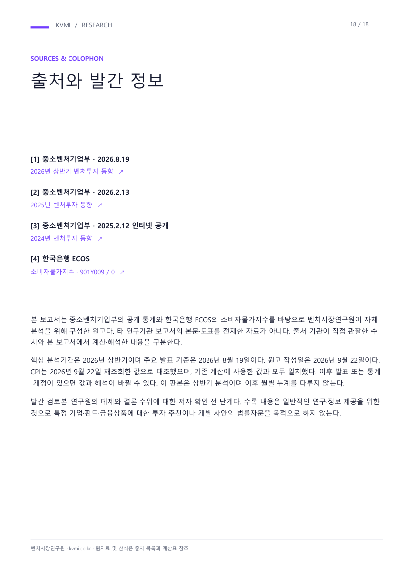
벤처시장연구원 · kvmi.co.kr · 원자료 및 산식은 출처 목록과 계산표 참조.